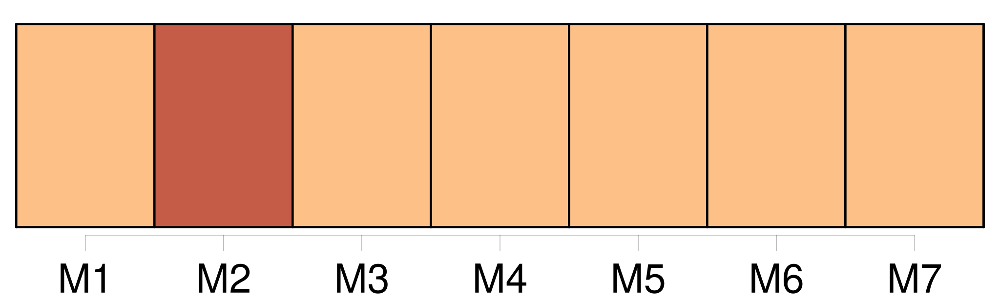

Longueur nb maillons : 21 mentions |
  |
Déchire ce funèbre linceul où tu vas t’ envelopper ; je suis la beauté, je suis la jeunesse, je suis la vie ; viens à moi, [nous] serons l’ amour. [1 phrases]
[Notre] existence coulera comme un rêve et ne sera qu’ un baiser éternel. [65 phrases] ajouter encore une impossibilité à toutes celles qui étaient déjà entre [nous] !! [118 phrases] Je t’ ai attendu si longtemps, que je suis morte ; mais maintenant [nous] sommes fiancés, je pourrai te voir et aller chez toi. [86 phrases] la bonne vie bien heureuse, la belle existence dorée que [nous] mènerons!!
— Quand partons [-nous] , mon gentilhomme? [19 phrases] Levez -vous bien vite, [nous] n’ avons pas de temps à perdre. [2 phrases] [Nous] devrions déjà être à dix lieues d’ ici. [12 phrases] [nous] allons loin et [nous] n’ arriverons pas. [1 phrases]
Toutes les portes s’ ouvraient devant elle aussitôt qu’ elle les touchait, et [nous] passâmes devant le chien sans l’ éveiller. À la porte, [nous] trouvâmes Margheritone : c’ était l’ écuyer qui m’ avait déjà conduit ; il tenait en bride trois chevaux noirs comme les premiers, un pour moi, un pour lui, un pour Clarimonde. [15 phrases] [Nous] habitions un grand palais de marbre sur le Canaleio, plein de fresques et de statues, avec deux Titiens du meilleur temps dans la chambre à coucher de la Clarimonde, un palais digne d’ un roi. [Nous] avions chacun notre gondole et nos barcarolles à [notre] livrée, [notre] chambre de musique et [notre] poète. [16 phrases] Les médecins qu’ [on] fit venir n’ entendaient rien à sa maladie, et ils ne savaient qu’ y faire. [45 phrases] » J’ évitais de faire la moindre allusion au narcotique qu’ elle m’ avait versé et à la scène de l’ aiguille, et [nous] vivions dans le plus parfait accord. [38 phrases] Toute communication entre [nos] âmes et [nos] corps est rompue désormais. |

|
La ressource peut être téléchargée sur la page Ortolang
Si vous avez des questions ou vous voyez des erreurs, merci d'envoyer un mail à silvia.federzoni89@gmail.com
Site développé par S. Federzoni (contact)